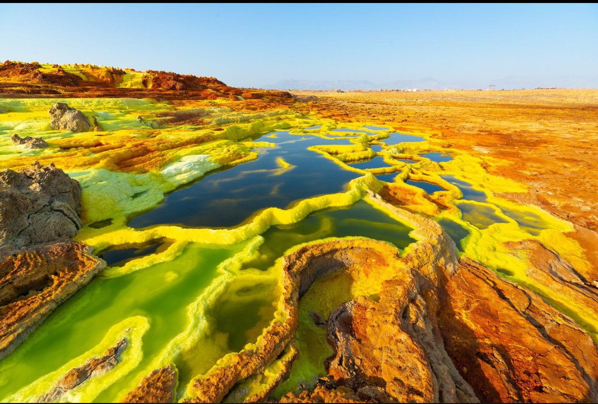
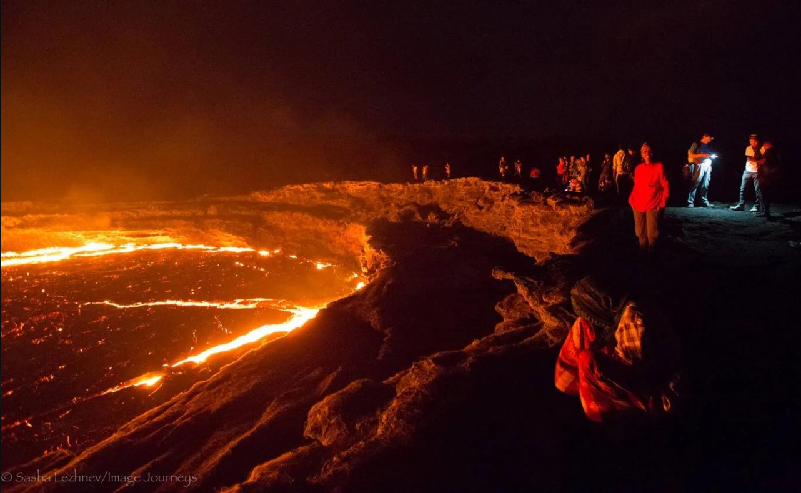
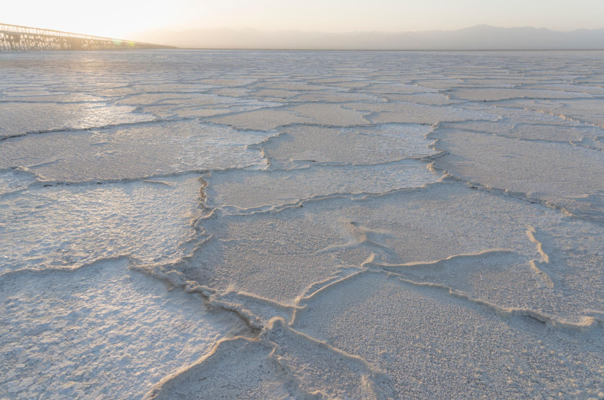
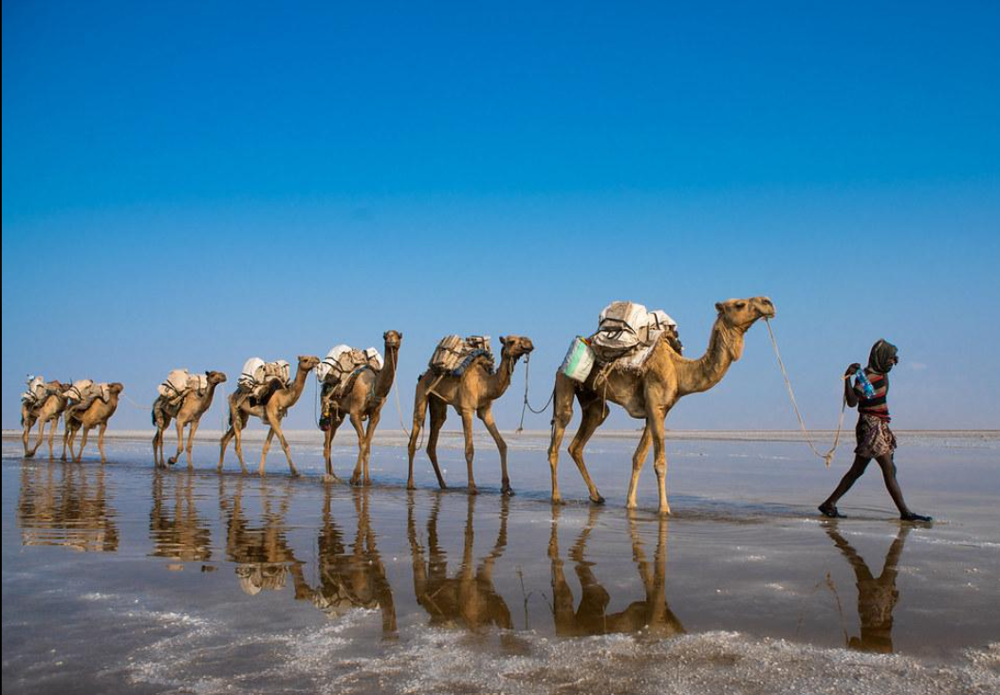
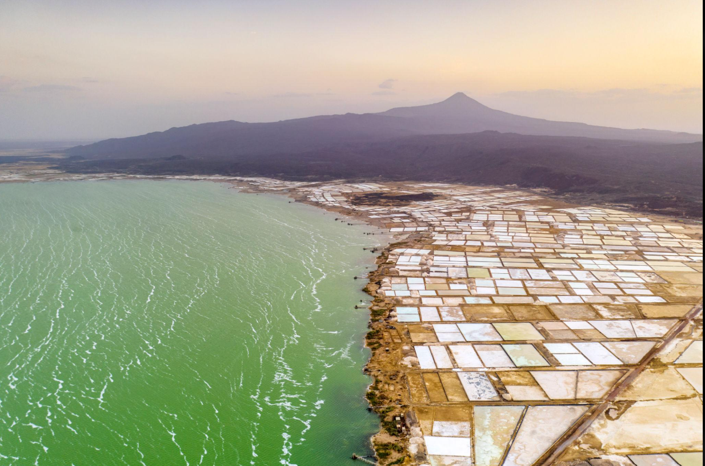

Discription Of Lalibela
Lalibela is a historic town located in the Amhara Region of northern Ethiopia. It is famous for its remarkable rock-hewn churches carved directly into solid volcanic rock. The town is one of Ethiopia's most important religious and historical destinations. It is named after King Lalibela, who is traditionally associated with the construction of its famous churches. Lalibela is a UNESCO World Heritage Site and attracts visitors from around the world who want to explore its ancient architecture, religious traditions, and cultural heritage.
Things to Experience in Lalibela
| No | Attraction | Discription |
|---|---|---|
| 1 | Bete Giyorgis (Church of St. George) | Famous cross-shaped church carved from solid rock. |
| 2 | Bete Medhane Alem | One of the largest rock-hewn churches in Lalibela. |
| 3 | Bete Maryam | Beautiful ancient church known for its religious artwork and architecture. |
| 4 | Bete Meskel | A small rock-hewn church with historical and religious significance. |
| 5 | Bete Golgotha Mikael | Famous for its religious importance and ancient carvings. |
Travel Packege To Lalibela
| Name | Destnation | Day's | price |
|---|---|---|---|
| Hiatorical Tour | Lalibela | 4 days's | 50,000 Birr |
Discription Of Dhilak
The Danakil Depression is one of the hottest and most extraordinary places on Earth, located in the Afar Region of northeastern Ethiopia. It is famous for its colorful sulfur springs, active volcanoes, salt lakes, and unique landscapes. Visitors can explore the fascinating Dallol hydrothermal area, witness traditional salt mining, and experience the beauty of Ethiopia's natural wonders. It is a perfect destination for adventure lovers and nature explorers.
Known as one of the hottest places on Earth, the Danakil Depression offers a rare opportunity to explore a fascinating environment shaped by volcanic activity and geological changes.Things to Experience in Danakil Depression
| No | Attraction | Discription |
|---|---|---|
| 1 |  Dallol Colorful Sulfur Springs |
Explore extraordinary yellow, green, orange, and white mineral formations created by volcanic activity. |
| 2 |  Erta Ale Volcano |
Enjoy an adventurous guided hike to see the active volcanic crater and its spectacular lava lake when visible. |
| 3 |  Lake Asale Salt Flats |
Discover the beautiful white salt plains and learn about traditional salt harvesting. |
| 4 |  Traditional Camel Caravans |
Watch camels transporting salt blocks across the desert and experience local traditions. |
| 5 |  Lake Afrera |
Admire the beautiful salt lake, turquoise waters, and surrounding volcanic landscapes. |
Travel Packege To Danakil Depression
| Name | Destnation | Day's | price |
|---|---|---|---|
| Dhilak Depression | Afar | 6 days's | 70,000 Birr |